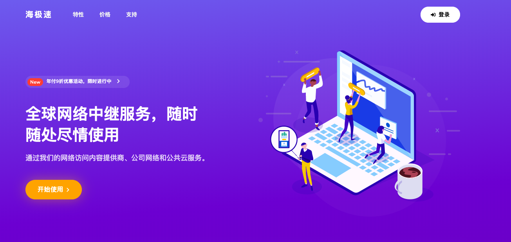
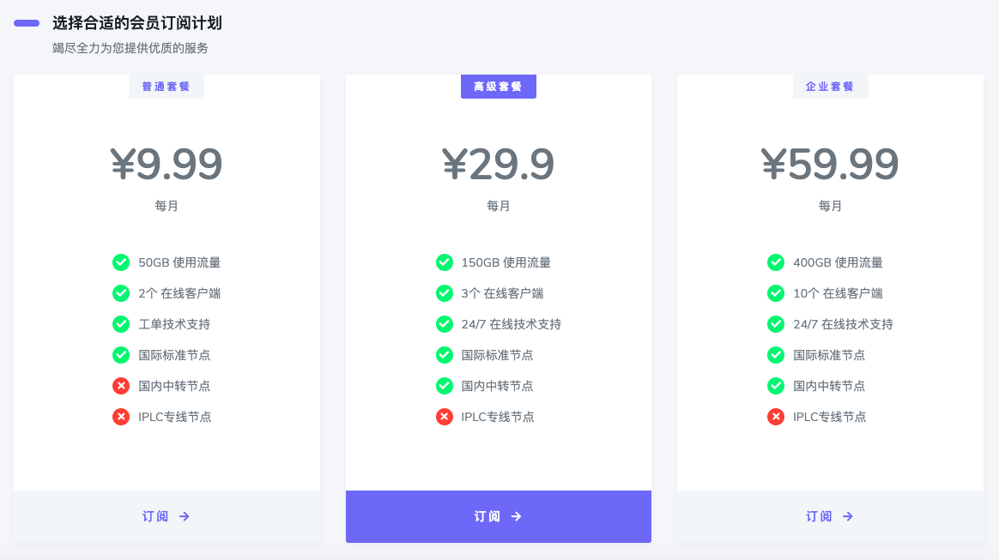
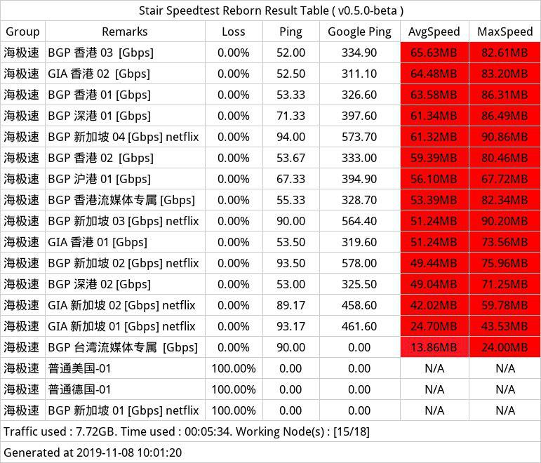
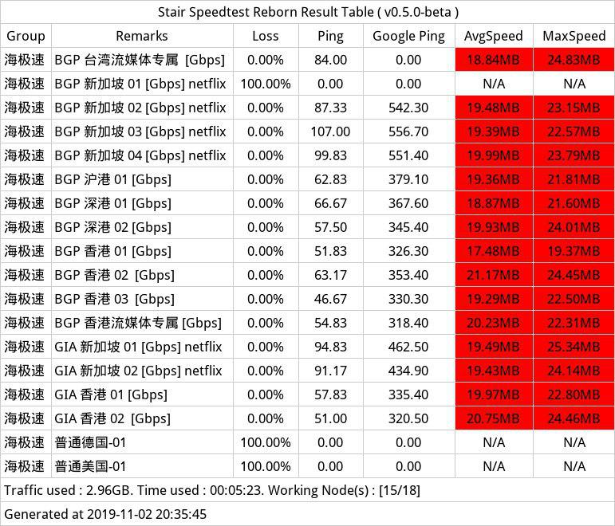
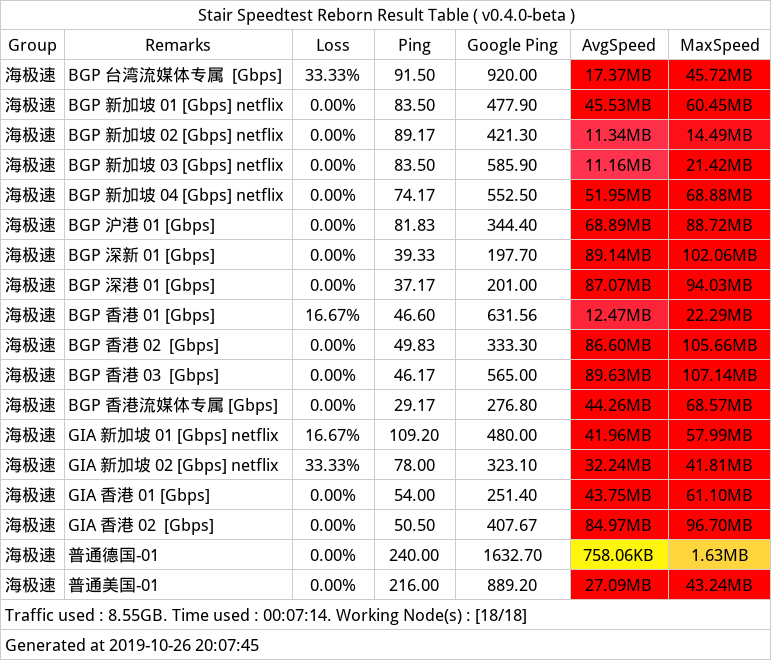
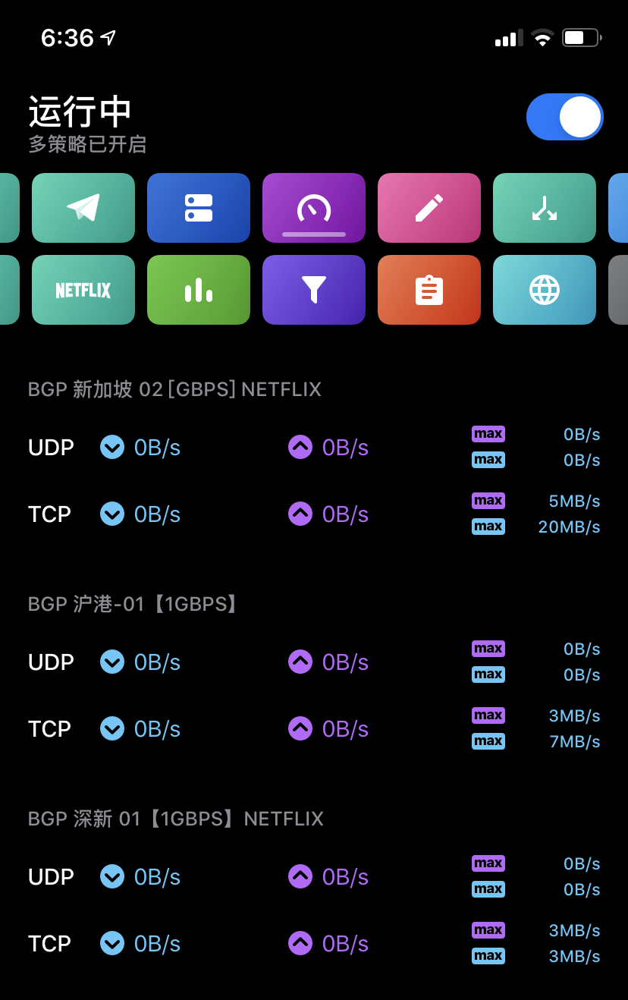
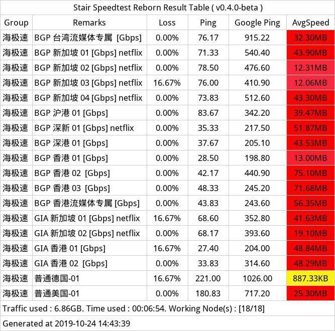
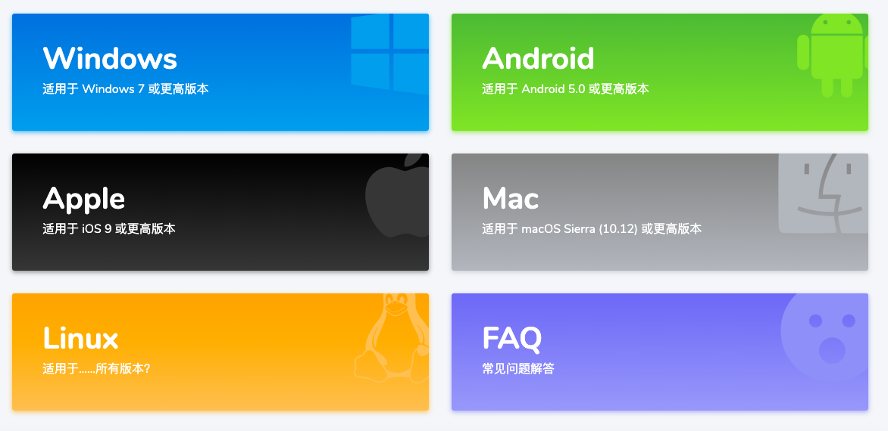

厘米云（IPLC内网专线机场）收购海极速，不再接受新用户注册，已注册且付费的用户会转移到 厘米云；
半月谈，稳定，高速，可月付加持。
.com 域名已墙（需挂代理），请使用新域名 haijisu.xyz dd.haijisu.site (未墙) ；
如大家所知，N3RO 是我今年最后写的一个机场了；所以海极速暂时不会被划分到毒奶专线的推荐里面，但并不妨碍大家尝鲜，毕竟现在海极速的G口节点比用户还多（:-D）（待一个月观察）；
via 机场专线 查看适合你的机场推荐；
以上。
0.BGP线路介绍；
1.非IPLC，过墙；
2.BGP/GIA/均1Gbps带宽/高速/可解锁Netflix/HBO/动画疯等流媒体；
3.*新机场；
BGP：BGP的实际意思通常是一个IP在多个运营商的网络中均为直连，不经过第三运营商，利用iptables或相关软件通过将去海外VPS的流量加一层国内转发。不过不同机场的定义也不一样。正常来说比如Rixcloud，指的是他们入口是阿里云、部分落地节点是自己起了BGP（去Peer了GitHub、微软、Cloudflare等等）。不过多数机场把BGP定义为阿里云公网中转（*海极速正是此种）等。
via 毒药机场测评 名词解释
1.当然，BGP没有IPLC技能点高，N3RO正是IPLC 全线（Almost），且贵且珍惜；
2.BGP快不快？快。
3.但依然有QoS（*很少）
4.BGP线路亦是极好的，在不开会的时候；

Quantumult及X/Shadowrocket/Kitsunebi/Clash/Surge/SurfBoard/SSR
*如未来有更新，请以实际套餐定价为准；（24.10.2019）

-1.相较于IPLC动辄5毛1块2块 ，BGP约合2毛1GB (目前定价) 的流量费用，是非常诱人的。（最近看Netflix简直不要太爽）
0.据说 998RMB R姓公司也是BGP中转（确信）；
1.基础套餐基础节点无BGP中转（有普通中转，但速率不会差），高级及以上套餐才有BGP中转；
2.最低月付9.9元起（50Gb/月）；
3.因为网站模板的原因只能设置三个套餐；
4.个人感觉过度不够平滑，9.99-29.99-59.99，缺一个20元内套餐，如果未来能加上就太好不过了;
5.以及最低的基础套餐没有中转（已经确认）...
| 付费 | 基础套餐 | 高级套餐 |
|---|---|---|
| 月付 | 150M | 200M |
| 季付 | 150M | 200M |
| 半年付 | 200M | 300M |
企业不限速
PS： 独享速度均为理论独享。待节点负载达到一定程度后（新机场是这样），会增加新的节点。
退款政策：测速多个节点达不到速率且总使用流量不超过5G的。可在购买后24小时内退款。
1.聊聊TG刷刷ins/Twitter偶尔看看YouTube 9.9元套餐够用，平均每天1.5GB；
2.高级套餐及以上有中转节点，相对比IPLC专线来讲，BGP中转 2毛1GB流量...（实在太™经济了！）
3.但如果不考虑BGP中转的情况下，可以考虑毒奶专线推荐的 卡车家族，50+节点支持，Netflix解锁等 （学生党最爱，折后6.4元起；在此（海极速）之前我一直用这个看 Netflix，最主要的是套餐价格灵活 ）；
4.总的来说，预算30元及以上，选海极速会是个不错的选择（当然这个价格可以上IPLC了，虽然流量要少一小半）；
1.海极速的流媒体解锁不要太棒，新加坡节点多多，看 Netflix 很享受，参阅；
2.部分用户喜欢看的巴哈姆特动画疯也有节点支持；
1.新机场来说，节点比用户还多...人均G口（笑:



*运营商移动；

via TG频道，速度真就炸裂了呗，15MB/s（ 但就算看4K也™就20MB-50MB轻轻松了啊，150M带宽除以8，就是可得理论下载速度约为18Mb/s； ）https://t.me/limboprossr/890
via 完整测速视频可参阅；

0.建议使用Gmail注册；
1.haijisu.com（已墙）/ haijisu.xyz；
2.支持支付宝支付；
3.购买后尽快加TG群（用户中心有提示）；

1.用户中心提供详实客户端配置教程；
2.有软件下载供应；
1.我依然建议贵精不贵多，合适自己的才是最重要的；
2.虽然人均手持N+机场已成为TG共识；
1.关注频道 https://t.me/limboprossr 不失联；
2.毒奶粉们（我管我的Fans）可联系 TG机器人 或发送 邮件 获取帮助；
3.或点击本页面右下角的聊天按钮联系；
{kind=link}